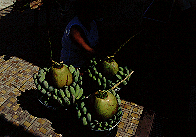

ボウタタウンパゴダ/ヤンゴン
BotataungPagoda/YANGON
ヤンゴンの市街地南端は港町である。
その一画にあるボウタタウンパゴダは仏陀の聖髪と聖歯が納められているという。
ここの最大のお目当ては仏陀の聖髪と聖歯。狭いところから皆覗き込む。私も見たけど飾り立てるだけ飾り立ててあって何がなんだか良くわからなかった。

仏塔内部はガラスモザイクで造られた迷路のような回廊があり、それぞれのコーナーで各自瞑想や世間話などを楽しんでいる。もちろんカップルにも憩いのスポットである事は間違いない。

ミャンマーのお供物基本セット。境内や門前でよく見かける。

金金金・・・とにかく金一色である。金の茶室など物の比ではない。
機会じかけの回転賽銭装置。左は回転するテーブル状の鉢の中に賽銭を投げ込む。入れば願いが叶うという訳。
右は見にくいが中央の銀色の部分がアルミで作られた波である。ここの狭間に金色の鉢が浮いたり沈んだりしているのである。もちろん浮いた瞬間を狙って賽銭を投げるのである。
このように楽しみながら参拝をする姿勢というのが私は大好きである。
というよりもこんなものを求めて私は日々寺を巡っているような気がする。
大いに感動したのも束の間、この後ミャンマーではこんなものは珍しくもなんともないことが判明。恐るべし珍寺大国ミャンマー。

門前では生きている雀を売っている人達がいる。これは食べちゃうのではなく、買って放してやるのである。放生ですな。で、おっさんに捕まって雀を手渡される我が愚息。これもまた参拝のレクリエーションなり。
次のスポットへGO!
ミャンマーパゴダ列伝のページへ
珍寺大道場
HOME